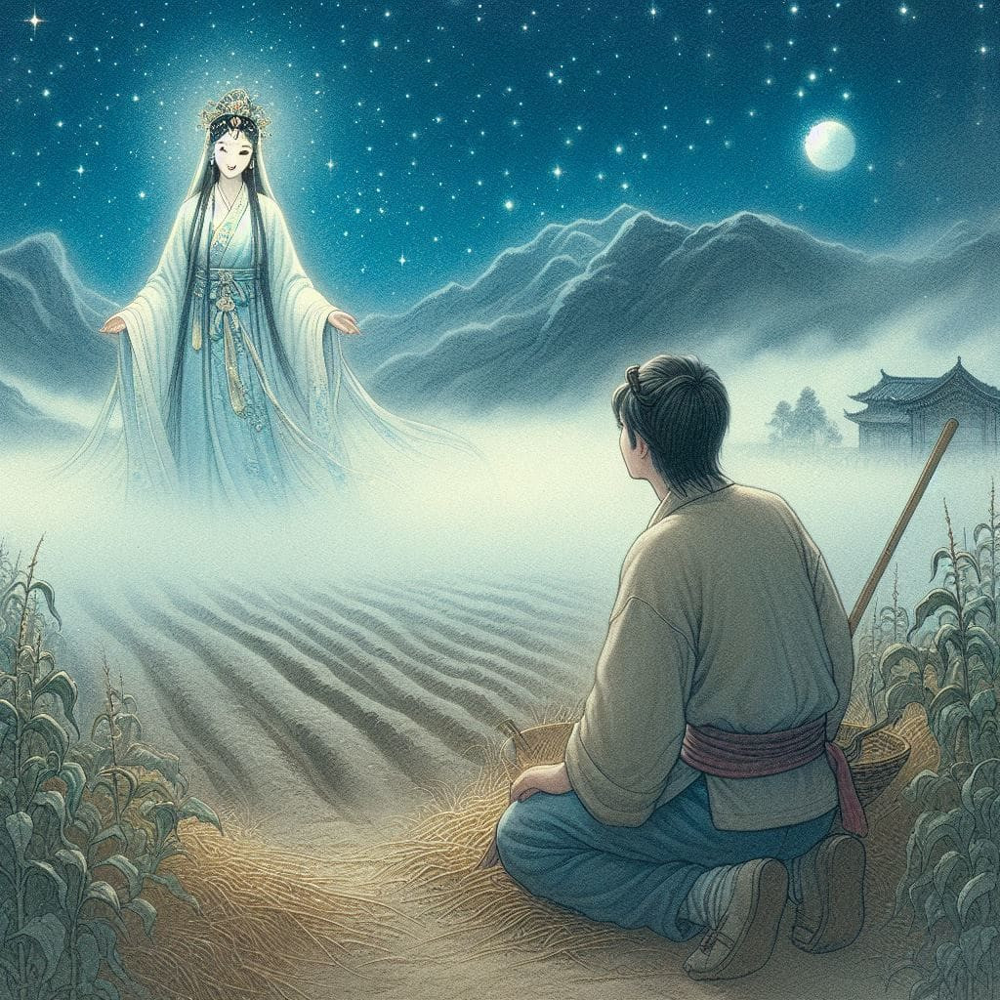

La Légende Urbaine du Xiongqi
Sous le dais silencieux de la nuit, où scintillaient les étoiles face à une lune timide voilée par des nuages errants, un humble paysan s'abandonna à un rêve aussi mystérieux que fascinant. Peu à peu, un voile de brume se dissipa, révélant une assemblée sereine de pandas qui s'avançaient vers lui avec une grâce tranquille. Ces douces créatures, emblèmes de paix et de sérénité, semblaient porter en elles une prophétie silencieuse, un murmure venu d'ailleurs.
Comme surgie directement de la brume, la Déesse He Xiangu se matérialisa, sa lumière perçant l'obscurité nocturne. La rencontrer était à la fois un privilège profond et une énigme mystérieuse. Frappé de respect, le paysan fut enveloppé d'une vague de vénération profonde.

Ceux qui s'adaptent aux temps sont bénis
, prononça la déesse d'une voix aux harmonies éthérées.
Le moment est venu pour le Xiangqi d'entrer dans un nouveau chapitre—en se modernisant tout en honorant son riche passé. Une innovation cruciale est nécessaire : une cinquième pièce majeure, la clé de voûte de cette nouvelle ère.
Ému par cette révélation, le paysan chercha timidement à comprendre, sa voix tremblant d'un mélange de crainte et de doute. Comment était-il possible que lui, si modeste et mortel, soit choisi pour une entreprise si noble ?
Avec un sourire qui semblait illuminer à travers les âges, He Xiangu dévoila doucement sa main. Une scène se déploya dans sa lueur : un cheval bondissant avec l'élégance agile d'un lapin.
Ce spectacle transcendait la simple prouesse physique ou la vitesse. Il dégageait une souplesse enchanteresse, une adaptabilité captivante—qualités essentielles pour évoluer harmonieusement dans le grand tissu de l'existence. Émergeant tel un symbole profond des mystères de l'univers, cette vision incarnait non seulement la rapidité, mais aussi l'art raffiné de naviguer dans les méandres de la vie avec équité et cohésion.
Ces principes, fondements d'une société où diverses voix s'unissent en harmonie, résonnaient comme un rêve éternel : l'émergence d'un leadership juste et sage, bâti sur les piliers du respect mutuel et de la sagesse collective.
À son réveil, le paysan fut submergé de confusion alors que les premières lueurs de l'aube l'enveloppaient. Le rêve persistait, à la fois lointain et intensément présent, mystère enveloppé dans les brumes de la nuit. Pourtant, de son être intérieur jaillit une énergie impérieuse, le poussant vers l'action.
Guidé par l'inspiration divine, il entreprit sa tâche avec une détermination renouvelée. Conduit par une main invisible, il façonna la pièce comme l'avait montré He Xiangu : une fusion harmonieuse de la puissance du cheval et de la grâce du lapin. Cette création, née d'une vision céleste et du savoir-faire mortel, annonçait un nouveau chapitre pour le Xiangqi, alliant héritage et progrès dans un jeu destiné à enchanter les générations futures.
Ainsi naquit le Xiongqi, non pas simplement comme un jeu, mais comme le symbole d'une évolution, inspiré par la sagesse ancestrale et le courage de ceux qui osent rêver.